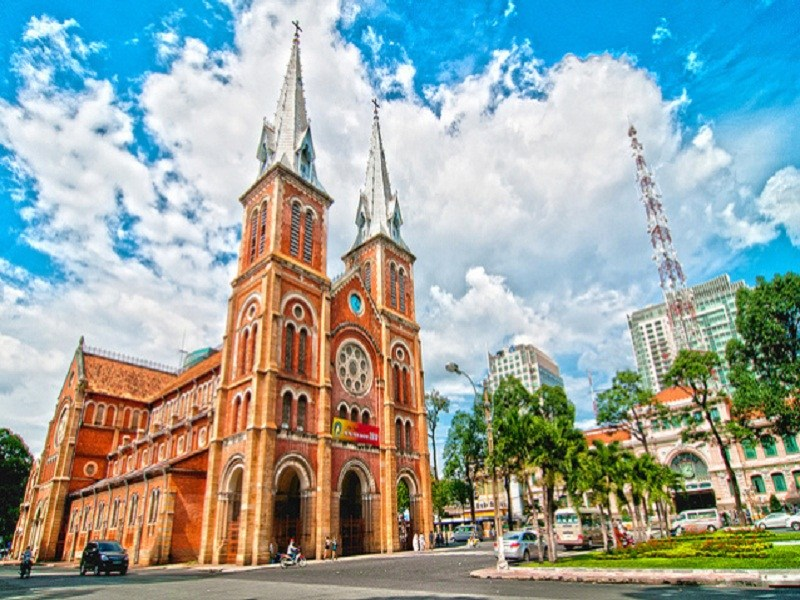

Ho Chi Minh City

The economic backbone of Vietnam and the nation’s largest metropolis, Ho Chi Minh is one of the most fun places to visit in the country. The sprawling city is officially home to some 8 million residents, yet in reality, it’s far more populous than that. The central business zone or District 1 is the area of the city that’s most traveled by tourists.

However, for the adventurous types, head to the less explored, more authentic and interesting neighboring districts: Binh Thanh, Phu Nhuan or District 3. The city is home to a number of great centrally-located museums, endless shopping and vibrant nightlife. Anyone spending time in Ho Chi Minh should explore Nguyen Hue, Ben Thanh Market, Bui Vien, the Bitexco Tower, the seafood restaurants along the canal and Binh Thanh’s maze of alleys.
Can Tho

Can Tho is the largest city in the Mekong Delta and home to some of the country’s most interesting markets. The commercially-friendly location along the banks of the Hau River has made this an important trading center for centuries. Anyone visiting should set aside a day to rise early and visit the wholesale Cai Rang Floating Market and the retail Phong Dien Floating Market.
A day trip exploring the numerous narrow canals and tributaries of the region, with stops in rice paper factories and crocodile or python farms, is also highly recommended. You can buy many kinds of unique tropical fruits such as jackfruit, mango and durian from local boat vendors. Even clothes, spicy and mobile card can be found here, the same as other normal markets!
Phu Quoc Island

Phu Quoc is one of the most well-known destinations on a trip to Southern Vietnam. Belonging to Kien Giang Province, Phu Quoc is the largest island in Vietnam. There are 20 pristine beaches in Phu Quoc, the most popular ones are Khem Beach, Long Beach and Pineapple Beach. In this island, you can take part in some exciting activities such as diving the coral reefs, night squid fishing, cycling along the beach and kayaking in the bay.

Some unspoiled islands which are worth spending a day trip are Hon Xuong and Hon Thom. You can reach these islands by boats and enjoy picturesque sceneries and fresh air.
The locals on this island earn their living mostly from the sea and Phu Quoc is famous for producing traditional fish sauce (nuoc mam).